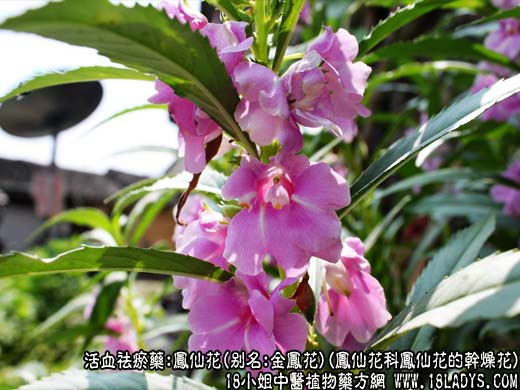
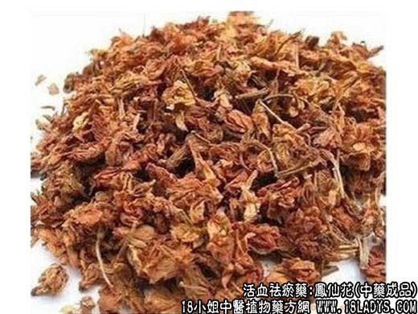

【功效与作用】
凤仙花，别名：金凤花、洒金花、芰芰草、假桃花、指甲草，为凤仙花科植物凤仙花的干燥花。甘、温。
祛风活血、消肿、止痛。用于经闭腹痛、产后瘀血未尽、跌打损伤，单方煎服。
【药物形态】
凤仙花茎高40-100厘米，肉质，粗壮，直立。其花形似蝴蝶，花色有粉红、大红、紫、白黄、洒金等，善变异。有的品种同一株上能开数种颜色的花朵。凤仙花多单瓣，重瓣的称凤球花。据古花谱载，凤仙花200多个品种，不少品种现已失传。根据花型不同，可分为蔷薇型、山茶型、石竹型等。凤仙花的花期为6-8月，结蒴果，状似桃形，成熟时外壳自行爆裂，将种子弹出，自播繁殖，故采种须及时。
凤仙花性喜阳光，怕湿，耐热不耐寒。喜向阳的地势和疏松肥沃的土壤，在较贫瘠的土壤中也可生长。凤仙花用种子繁殖。3—9进行播种，以4月播种最为适宜，这样6月上、中旬即可开花，花期可保持两个多月。
凤仙花种子亦名急性子，茎亦名透骨草，全草捣汁，外用治跌打损伤。花瓣加些明矾捣碎后，可染指甲。
【临证应用】防治指甲沟发炎、肿痛以及灰指甲、鹅掌风等。本品60g，冰片5g，白矾30g，米醋300毫升，共捣烂如泥，外搽患处。
【药理作用】对多种皮肤真菌有抑制作用。
【化学成分】含花色甙、矢车菊素、飞燕草素、槲皮素等。
【用量用法】6——10g，水煎服，或入剂。外用适量。
【注】染指甲：采撷花瓣适量，加明矾捣成泥状，置于指甲上包扎12小时左右，指甲便染成绯红色。因其花是一种红色染料，借明矾媒染剂而着色。